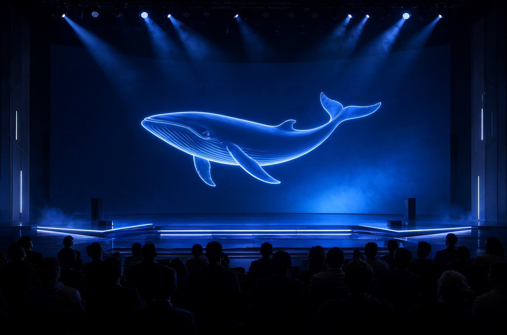
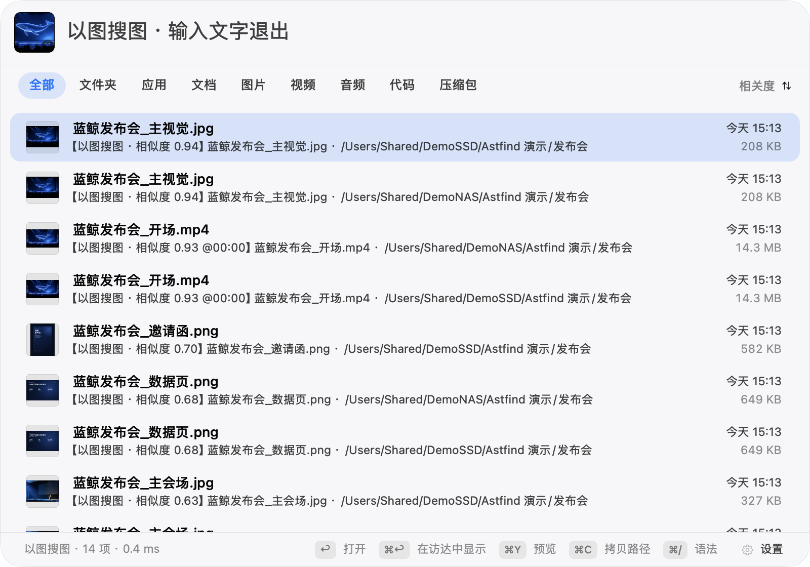
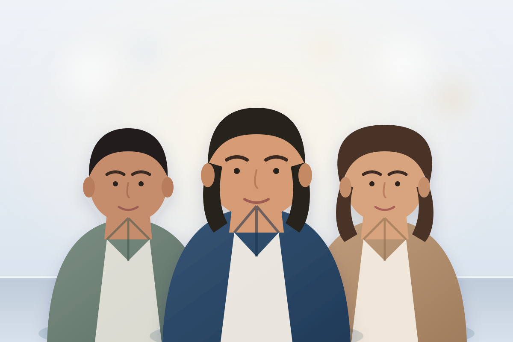

01 / 学校 · 政府 · 企业档案
通知、纪要和培训资料
正文、扫描件、图片文字，一起搜。
本机、移动硬盘、NAS 统一索引。
图片里的字、视频帧里的字、画面内容，都能用一句话找到；也可以拿一张照片找同一个人。


从几百个到几万个，文件夹不再是入口。
01 / 学校 · 政府 · 企业档案
正文、扫描件、图片文字，一起搜。
02 / 广告 · 影视后期
找相似构图、色调和场景。
03 / 融媒体中心 · 活动拍摄
一张嘉宾照片，找回他出现过的图片与视频。
04 / 个人 · 创作者 · 家庭影像
按人物、画面找回片段。
文件名只是起点。正文、图片文字、视频帧文字和画面内容，一起进入同一份结果；每条命中都带来源和时间码。

把图片拖进搜索框，或直接 ⌘V 粘贴截图。图片和视频帧共用一套向量；命中视频时给出时间码，默认播放器是 QuickTime 的话，点开就能定位到那一帧。
01 · 框住画面的一角
不用描述，给一张参考图就行。

02 · 找它出现过的所有地方

参考照片在本机比对，不上传；结果按人物相似度排序，视频命中带时间码。

参考照片嘉宾合影.jpg人物检索是实验功能，默认关闭；人脸向量独立保存，可在设置中按来源或目录开启，并随时删除。
本机、USB SSD、SMB NAS 合并成一个搜索范围。来源离线后仍可搜索，标记「离线」并禁止打开；重新连上自动重扫。

实测来源：NAS × 2 + USB SSD。
哪些内容留在本机、哪些可以外发，由你选择。
OCR / PDF / 文本抽取全部在本机完成，零外发。
关闭零请求；本地只连回环地址；远程需显式授权。
仅保存环境变量引用名，绝不明文落盘。
索引与搜索反馈只写本地；反馈可随时关闭，绝不上传。
612 张真实素材配对测试，174 张独立抽样。WeMM-2B 在首位命中与排序质量上高于 WeMM-9B，同时零外发。
| 模型 | 首位命中 | 排序质量 | 单图 | 峰值内存 | 外发 |
|---|---|---|---|---|---|
| WeMM-2B（本地） | 11/11 | 1.000 | 1.06s | 4.76GB | 否 |
| WeMM-9B（远程） | 10/11 | 0.9545 | ≈0.7s（含网络） | — | 是 |
| EmbeddingGemma 2（本地） | 7/11 | 0.818 | 0.99s | 2.95GB | 否 |
| Chinese-CLIP B/16（参考） | 5/11 | 0.636 | 39.5ms | 2.2GB | 否 |
小屏已隐藏单图与峰值内存列。
人脸通道 · 本机运行
检测、五点对齐与识别都在本机完成。
以上为运行参数；识别效果会随素材、角度和阈值变化，单脸推理为 Apple Silicon 实测。评测管线可接入其他识别模型做 A/B 对比与阈值调优。参数与调优记录见 README 。
完整脱敏说明、逐条查询与复现命令见 语义模型完整评测报告 。
Apple Silicon，macOS 14 起。任选一种方式安装。
Node.js 18+，装到 ~/Applications，无需 sudo。
npm install -g astfind && astfind
安装前校验 SHA-256、bundle ID、arm64 与代码签名完整性。